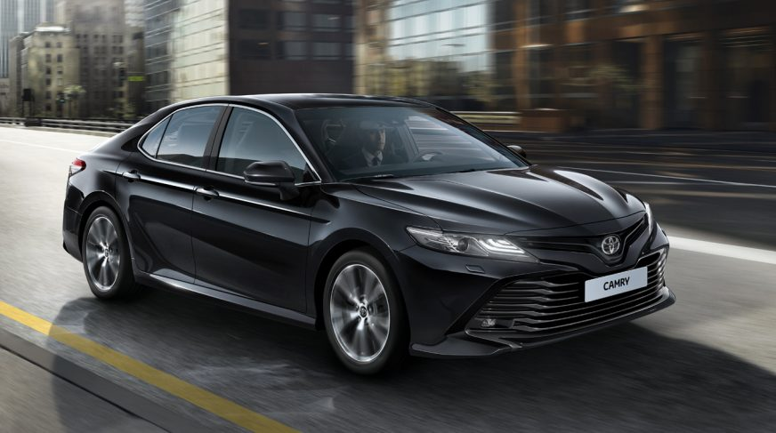
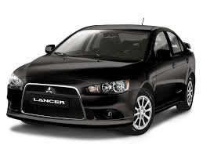

Camry 70 |
|
|
 more images |
The Toyota Camry (/ˈkæmri/; Japanese: トヨタ・カムリ Toyota Kamuri) is an automobile sold internationally by the Japanese manufacturer Toyota since 1982, spanning multiple generations. Originally compact in size (narrow-body), later Camry models have grown to fit the mid-size classification (wide-body)—although the two sizes co-existed in the 1990s. Since the release of the wide-bodied versions, Camry has been extolled by Toyota as the firm's second "world car" after the Corolla. In Japan, Camry is exclusive to Toyota Corolla Store retail dealerships. Narrow-body cars also spawned a rebadged sibling in Japan, the Toyota Vista (トヨタ・ビスタ)—also introduced in 1982 and sold at Toyota Vista Store locations. Diesel fuel versions have previously retailed at Toyota Diesel Store. |
Mitsubishi Lancer |
|
|
 more images |
The Mitsubishi Lancer is a compact car produced by the Japanese manufacturer Mitsubishi since 1973. The Lancer has been marketed as the Colt Lancer, Dodge/Plymouth Colt, Chrysler Valiant Lancer, Chrysler Lancer, Eagle Summit, Hindustan Lancer, Soueast Lioncel, and Mitsubishi Mirage in various countries at different times, and has been sold as the Mitsubishi Galant Fortis in Japan since 2007. It has also been sold as Mitsubishi Lancer Fortis in Taiwan with a different facelift than the Galant Fortis. In Japan, it was sold at a specific retail chain called Car Plaza.Between its introduction in 1973 and 2008, over six million units were sold.[2] According to Mitsubishi, there were nine generations of development before the current model.Mitsubishi ended production of the Lancer in August 2017 worldwide, with the exception of Taiwan and China. |